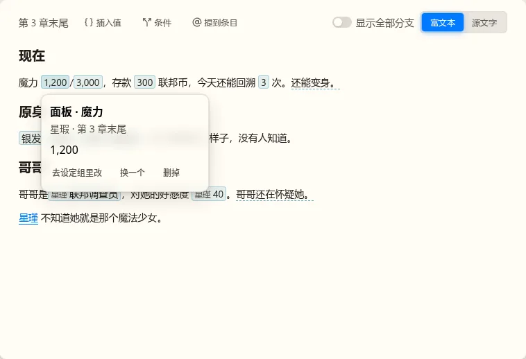
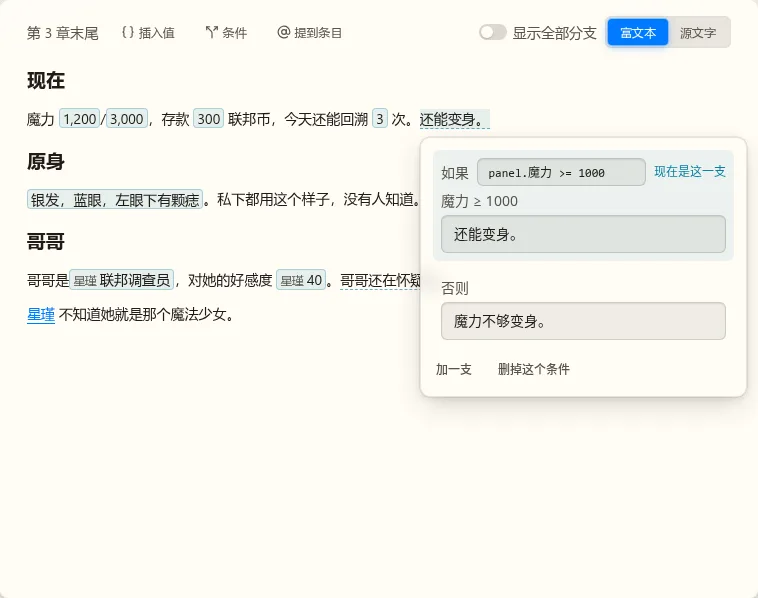
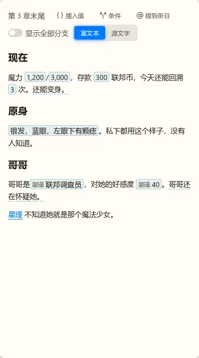

第 2 轮：给 Agent 的主文字与富文本 spike
Agent 读主文字时，值写不写在文字里？
推荐乙：成功率三组一样，只有“带值、可以就地改”出了和格式有关的错；乙读到的、交回的都是源文字，内核可以去掉整套带值写法与回写协议。
| 模型 | 组 | 成功 | 和带值写法有关的报错 | 平均调用 | 每次费用（元） |
|---|---|---|---|---|---|
| luna | 甲 带值，可以就地改 | 32/33 | 6 次（3 次运行），1 次弄丢了一个取值 | 3.5 | 0.0092 |
| luna | 乙 不带值 | 32/33 | 0 | 3.2 | 0.0102 |
| luna | 丙 带值，只给看 | 33/33 | 0 | 3.2 | 0.0079 |
| flash | 甲 带值，可以就地改 | 33/33 | 0 | 3.5 | 0.0047 |
| flash | 乙 不带值 | 33/33 | 0 | 3.4 | 0.0041 |
| flash | 丙 带值，只给看 | 33/33 | 0 | 3.4 | 0.0044 |
乙 不带值
魔力 <V of="panel.魔力" />/<V of="panel.魔力上限" /> <If test="panel.魔力 >= 1000">还能变身。<Else />…</If>
值在 canon_read 的字段一节里，改值只用 set。乙组 luna 的一次失败是把那句另起了一块，和格式无关。
丙 带值，只给看
魔力 <V of="panel.魔力">1200</V>/<V of="panel.魔力上限">3000</V> <If test="panel.魔力 >= 1000" is="true">…</If>
一眼看到值；交回时程序去掉值。读到的和交回的是两种格式，要留带值写法的生成与去除。
甲 带值，可以就地改
魔力 <V of="panel.魔力">1200</V> … 改成 <V of="panel.魔力">800</V> 交回就改了字段
luna 照带值文字查找替换对不上 4 次、把带值写法原样交回被拒 1 次，有一次自己去值时弄丢了“魔力上限”。要留整套回写协议。
富文本里的条件，默认只画生效的一支，还是各支都画？
推荐 A：平时读起来就是一句正文；审校时打开“显示全部分支”看到全部，不用一个个点开。
spike 里能试的



| 试什么 | 怎么试 |
|---|---|
| 插入值、提到条目 | 在正文里输入 { 或 @，打字筛选，回车插入；Esc 退回成普通的字。工具栏也有 |
| 值变了 | 点“魔力”，去设定组里改成 800，看条件变成“魔力不够变身” |
| 源文字 | 右上角切到源文字，改完切回来；写坏了的标签切不回来 |
顾问意见里先不做的
| 意见 | 为什么先不做 |
|---|---|
| 点条件后在正文里原地展开、各支用完整的富文本编辑 | spike 先用浮层；各支里要能插值、加粗时再做原地展开，开发者试过浮层再定 |
| 手机上浮层与字段列表改成底部抽屉 | 条目页整体的窄屏做法另定 |
| “源文字”改叫“源码” | t39、t40 的界面已经叫源文字 |
已定
- 条件写成
test表达式（第 1 轮） - 给 Agent 的值写在标签中间、用 JSON（第 1 轮；本轮选乙的话不再需要）
- 取值与条件换成标签，另写 ADR 取代 0038 的决策 1 与 3（11-26）
- 解析器只留 marked，内核也换过去（11-23）
- 富文本为主，保留源文字，去掉分屏预览（11-26）